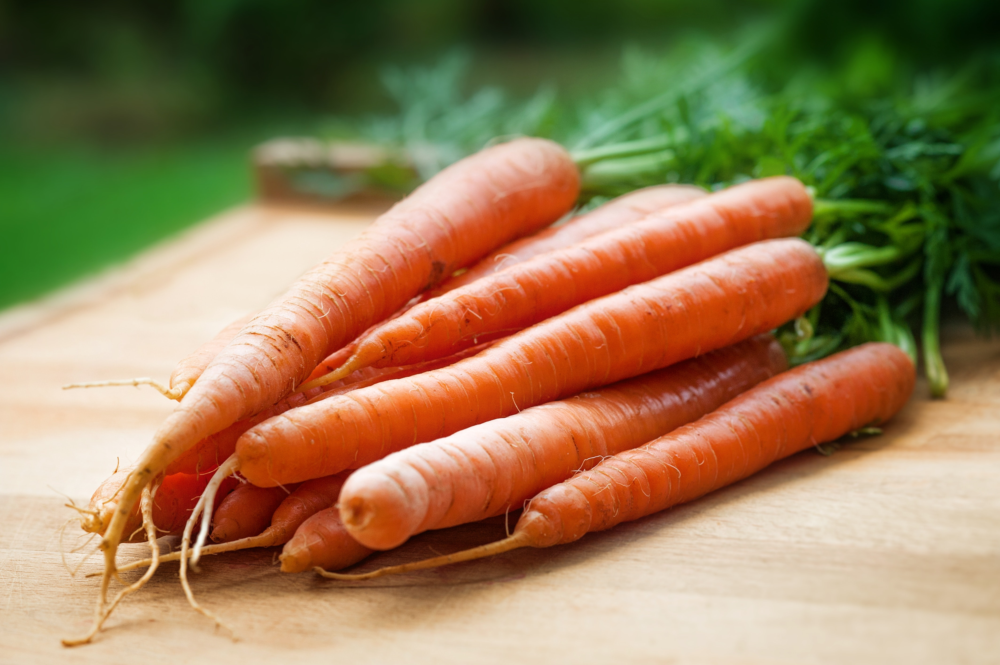

In season from local farms
Beach Plum Farm
West Cape May, NJ

Carrot
Potato
Bell Pepper
More local
Recipes for You
Spaghetti Sauce with Basil
This classic family recipe makes a rich, meaty, spaghetti sauce. Get your slow cookers ready, dinner will be delicious tonight!